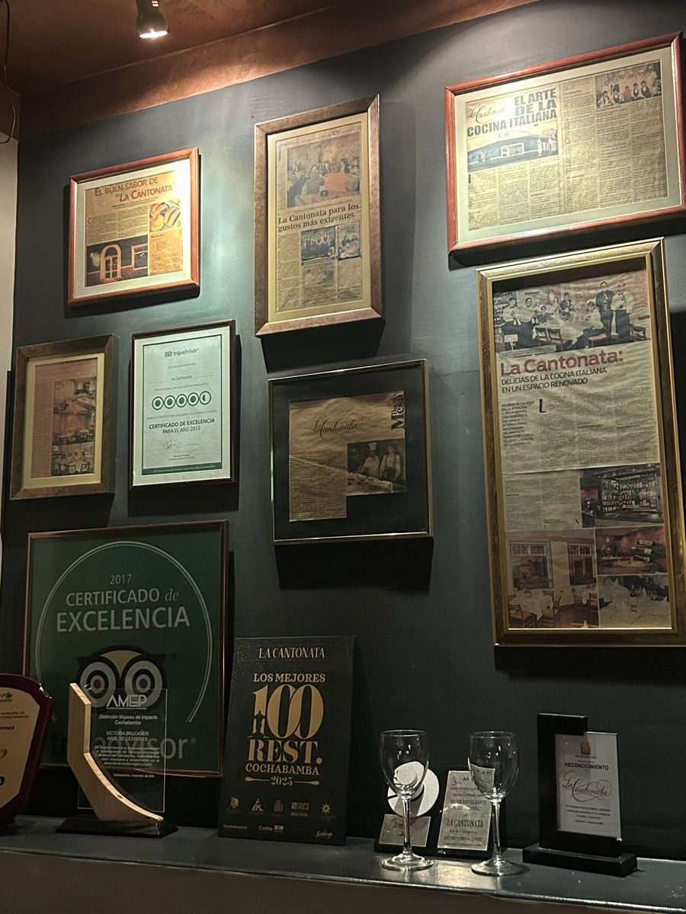
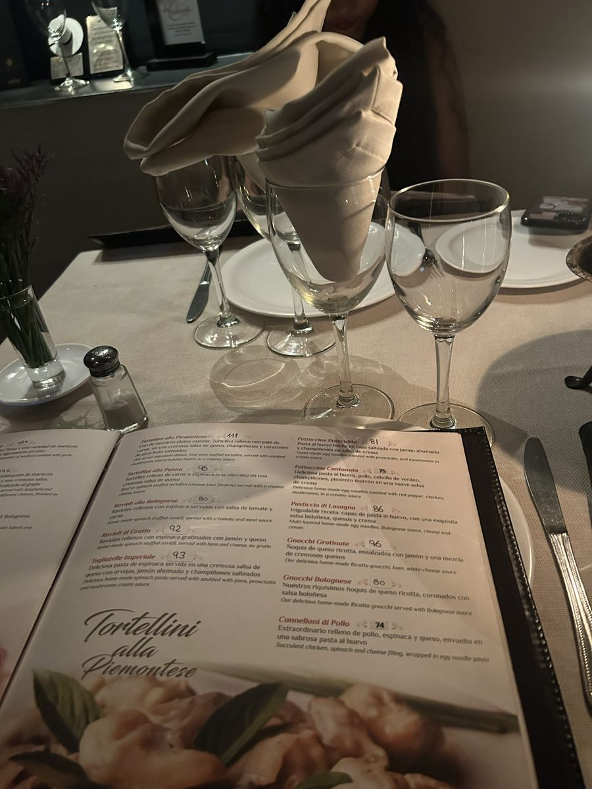

1 apê no Leblon ou 8 na Bolívia. Um Mustang aqui ou 4 lá. Agora você vai ver as contas, uma por uma.
EXPLICADO
O câmbio que mudou tudo
O dólar foi de Bs 6,96 para Bs 12
E os preços em bolivianos ficaram para trás. É aí que você ganha.
Durante mais de uma década, o governo do MAS segurou o dólar em Bs 6,96 na marra. Funcionou até acabarem os dólares.
Em junho de 2026, já com Rodrigo Paz no poder, o boliviano passou a flutuar. O dólar oficial foi para Bs 12,02. O boliviano perdeu cerca de 45% do valor em dólar.
O que isso significa para você
Quem ganha e guarda em bolivianos ficou mais pobre. Quem chega com dólar ou USDT ficou mais rico. Aluguel, carro usado, comida e serviço cobrados em Bs ainda não subiram na mesma velocidade.
O socialismo travou o câmbio. A conta chegou. E abriu uma janela para quem tem dólar.
Infobae; The Rio Times (Bs 6,96 até jun/2026; queda de ~45%, set/2026); usdthoy.com (flutuação desde 29/06/2026); BCB via usdtbol.com, 28/10/2026 (Bs 12,02).
Linha do tempo: do câmbio travado à janela
HOJEDólar oficial Bs 12,02 · USDT no P2P Bs 12,13
Infobae; The Rio Times; France 24 via Acento (08/11/2025); Agência Brasil (19/10/2025); usdthoy.com; BCB via usdtbol.com e dolarparalelobolivia.net, 28/10/2026.
Conta de bolso
Quanto vale o seu real lá
Bs por real = cotação do dólar em Bs ÷ cotação do dólar em R$ 12,02 ÷ 5,35 = 2,25 (oficial) Pelo Método USDT: ≈ 2,25 · remessa ≈ 2,13 · espécie ≈ 2,08
Você leva
Vira (USDT)
Equivale a
R$ 1.000
Bs 2.253
3 a 6 meses de almoço local (22 dias/mês)
R$ 10.000
Bs 22.534
3 a 11 meses de aluguel de 3 quartos
R$ 50.000
Bs 112.720
17 a 56 meses de aluguel de 3 quartos
R$ 200.000
Bs 450.917
2,8 Mustangs 2011 anunciados
A regra do multiplicador: tudo que é cobrado em bolivianos e não subiu com o dólar fica, para você, até 2× mais barato do que era antes de junho de 2026.
Pegue o número da sua reserva e multiplique por 2,25. Anote: esse é o seu poder de compra em bolivianos.
FipeZAP set/2026 via MySide (Leblon); autor e InfoCasas out/2026 (Cochabamba, faixa US$ 70–170 mil). US$ 1 = R$ 5,35 (Investidor10, 28/10/2026). Preço de anúncio é preço pedido.
O metro quadrado, lado a lado
RESUMOO m² mais caro da Bolívia custa menos que o da Barra
FipeZAP set/2026 via MySide e Daniel Carvalho Imobiliário; Equipetrol: anúncios Century 21, out/2026 (US$ 1.310–1.950/m²); Cochabamba: InfoCasas out/2026 (média ~US$ 940/m²); Calacoto: anúncios Century 21 (~US$ 620–670/m²).
Quantos apês da Bolívia cabem no seu bairro
Apartamento de 110 m² no Brasil contra o apê de 3 quartos de US$ 70 mil em Cochabamba (R$ 374.500).
Bairro
110 m² custa
Apês em Cochabamba
Leblon
R$ 3.172.070
8,5
Ipanema
R$ 2.969.560
7,9
Itaim Bibi
R$ 2.198.790
5,9
Pinheiros
R$ 2.008.600
5,4
Jardins
R$ 1.983.080
5,3
Lagoa
R$ 1.927.090
5,1
Moema
R$ 1.817.200
4,9
Barra da Tijuca
R$ 1.601.710
4,3
Vende 1, compra 1 e sobra. Quem mora de aluguel ou tem um apê quitado num desses bairros pode morar melhor e ainda guardar a diferença.
Encontre o seu bairro (ou o mais parecido) e anote quantos apês você teria na Bolívia.
FipeZAP set/2026 (m² por bairro) × 110 m²; Cochabamba: autor e InfoCasas out/2026. Cálculo do curso.
Santa Cruz de la Sierra
Equipetrol e Urubó: onde mora quem tem dinheiro
Equipetrol
Bairro de prédios novos, restaurantes e escritórios. É o “Itaim” de Santa Cruz.
Anúncios: US$ 1.310 a 1.950 por m² (R$ 7.000 a 10.400).
Ex.: 168 m² por US$ 220 mil.
Urubó
Do outro lado do rio Piraí. Condomínios fechados, casas grandes, campo de golfe.
Lote em condomínio de golfe: US$ 110 a 180 por m².
Ex.: casa de 400 m² construídos por US$ 480 mil.
Atenção ao “dólar paralelo”: alguns anúncios pedem pagamento em dólar ou no câmbio paralelo, outros aceitam parte em bolivianos. Pergunte sempre a moeda antes de negociar.
Uma casa de 400 m² em condomínio pelo preço de um apê de 140 m² em Pinheiros.
Century 21 (anúncios em Equipetrol e Urubó, consultados em out/2026; preço pedido); eju.tv (lotes Urubó Golf, US$ 110–170/m²). Pinheiros: FipeZAP set/2026, R$ 18.260/m² × 140 m² ≈ R$ 2,56 mi ≈ US$ 480 mil.
La Paz e o resto
Calacoto, a zona sul de La Paz
Mais baixa e mais quente que o centro, a zona sul (Calacoto, Achumani, San Miguel) concentra embaixadas, escolas internacionais e prédios de alto padrão.
~US$ 650m² em anúncios de Calacoto
3.631 mde altitude em La Paz
US$ 275 milcasa de 443 m² (Alto Calacoto)
Cuidado com a altitude. La Paz fica a 3.631 m, a sede de governo mais alta do mundo. Quem tem problema cardíaco ou respiratório precisa falar com o médico antes. Para a maioria dos brasileiros, Santa Cruz e Cochabamba são mais fáceis.
Century 21 (anúncios Alto Calacoto e Urb. Cordes, preço pedido, out/2026). Guinness World Records (altitude de La Paz).
Antes de comprar
5 regras para não cair em armadilha
Preço de anúncio é preço pedido. Negocie. Ofertas à vista em dólar costumam ter desconto.
Peça o folio real (a matrícula boliviana) e confira em Derechos Reales se o vendedor é o dono.
Confirme a moeda: dólar, câmbio paralelo, bolivianos ou mistura (ex.: 60% em dólar e 40% em Bs).
Não pague nada antes do contrato revisado por um advogado boliviano.
Guarde todos os comprovantes da origem do dinheiro (Parte 6). Sem isso, nada de imóvel.
O passo a passo da compra (estrangeiro pode comprar? quais impostos? como registrar?) está no capítulo 7.5 Moradia.
Abra um portal de imóveis boliviano hoje e salve 3 anúncios no bairro que você gostou.
Century 21 (anúncio com 60% em dólar e 40% em Bs, out/2026); boliviaimpuestos.com (folio real e Derechos Reales).
EXCLUSIVO
Aluguel
Aluguel de 100 m²: R$ 6.578 em SP
Na Bolívia, um 3 quartos sai a partir de R$ 870.
Imóvel
Por mês
São Paulo, 100 m² (média R$ 65,78/m²)
R$ 6.578
Rio de Janeiro, 100 m² (média R$ 61,86/m²)
R$ 6.186
Equipetrol, 1 quarto “de expatriado” (US$ 400–700)
R$ 2.140–3.745
O meu: 3 quartos no Queru Queru, Cochabamba, condomínio incluso (Bs 2.800)
R$ 1.217
Cochabamba Zona Norte, 3 quartos (Bs 2.000–6.500)
R$ 870–2.826
O pulo do gato: o aluguel anunciado em dólar para estrangeiro custa de 1,5 a 2 vezes o anunciado em bolivianos para o morador local. Procure o anúncio em Bs.
Pelo aluguel de 1 mês em São Paulo, você paga até 7 meses em Cochabamba.
FipeZAP Locação set/2026 (TNH1); InfoCasas out/2026; The Rio Times, set/2026 (Equipetrol e diferença de 1,5–2×). Câmbios: US$ 1 = R$ 5,35; R$ 1 = Bs 2,30.
Coisa de boliviano
Anticrético: morar sem pagar aluguel
É o jeito boliviano de alugar. Em vez de pagar todo mês, você entrega um valor grande ao dono e mora no imóvel pelo prazo combinado. No fim, recebe o dinheiro de volta inteiro.
1Você entrega o valor
2Mora 1 a 2 anos
3Não paga aluguel
4Recebe tudo de volta
Exemplo numérico (ilustrativo)
Valor do anticrético
US$ 30.000
Prazo
2 anos
Aluguel que você deixa de pagar (ex.: US$ 450/mês)
US$ 10.800
No fim, você recebe de volta
US$ 30.000
Custos: inscrição em Derechos Reales (~0,5% do valor cadastral) e RC-IVA de 10% ao ano sobre o valor do contrato, pago por trimestre.
InfoNegocios (como funciona); boliviaimpuestos.com (gravame ~0,5%, RC-IVA 10% a.a., Formulário 610; confirmar no SIN). Valores do exemplo: ilustrativos.
Riscos do anticrético
O golpe que você precisa conhecer
O dono pode não devolver. Se ele estiver endividado, hipotecar o imóvel ou não tiver o dinheiro no fim, você vira credor e vai para a Justiça.
O dono tem que ser o titular no folio real
Contrato registrado em Derechos Reales (o registro protege você)
Combine por escrito a moeda da devolução: com a crise do dólar, muitos donos querem devolver em Bs no câmbio oficial
Peça certidão de que o imóvel não tem hipoteca nem outro anticrético
Use advogado. O honorário costuma ser um % do valor (há contrato-modelo com 4%)
ALTAAnticréticos subiram até 29% e aluguéis até 20%
Se o anticrético te interessou, anote: “folio real + Derechos Reales + moeda da devolução”. São as 3 palavras que salvam você.
boliviaimpuestos.com; Red Uno via Bolivian Thoughts (19/11/2025, moeda da devolução); eju.tv (alta de anticréticos e aluguéis; data a confirmar).
Alugar, anticrético ou comprar?
Opção
Bom para
Cuidado
Aluguel em Bs
Os primeiros 6 a 12 meses. Testar o bairro
Reajuste; contrato curto
Anticrético
Quem tem reserva parada e quer morar sem custo mensal
Devolução; registro
Comprar
Quem já decidiu ficar e tem residência
Documentação; moeda
A ordem que o autor recomenda: aluga primeiro, conhece a cidade, e só depois pensa em anticrético ou compra.
Como eu fiz: aluguel em bolivianos, 3 quartos no Queru Queru, bairro nobre de Cochabamba, a 2 quadras da UPAL. Bs 2.800 por mês com condomínio incluso. Dividido por 3, sai Bs 933 por pessoa.
Anúncio de aluguel em Cochabamba (out/2026)
Bs/mês
Em R$
Garzonier (quitinete) novo, a ~1 km do apê do autor. Prédio com piscina, churrasqueira no terraço com vista para a serra e brinquedoteca
1.400
R$ 609
3 quartos (1 suíte com banheira), sala ampla, 6º andar, Zona Norte (Av. América)
3.300
R$ 1.435
Ninguém compra no escuro. Primeiro você mora, depois você investe.
Facebook Marketplace, anúncios vistos pelo autor em 29/10/2026 (preço pedido). R$ 1 = Bs 2,30.
INACREDITÁVEL
Carros
Mustang por R$ 69 mil
No Brasil, o mesmo carro é anunciado a R$ 279.990.
Carro
Brasil
Bolívia
Em R$
×
Mustang 2011
R$ 279.990
Bs 158.500
R$ 68.913
4,1
Nissan 350Z 2009
R$ 280.000
Bs 170.000
R$ 73.913
3,8
Porsche Macan 2017 × Macan S 2016
R$ 330.000
Bs 373.000
R$ 162.174
2,0
Facebook Marketplace, levantado pelo autor, out/2026 (preço pedido; anúncios sem dados de terceiros). R$ 1 = Bs 2,30 (autor, 28/10/2026).
Por que o carro é tão barato lá?
O anúncio está em bolivianos e o vendedor ainda não reajustou pelo dólar novo.
O vendedor precisa de liquidez. Com a crise do dólar, muita gente quer vender rápido.
O segredo do anúncio em Bs
Filtre os anúncios em bolivianos, não em dólar. O anúncio em Bs muitas vezes foi feito antes da flutuação e ainda usa a cabeça do câmbio antigo.
preço em R$ = preço em Bs ÷ 2,30 158.500 ÷ 2,30 = R$ 68.913
Enquanto aqui você paga IPVA de carro velho, lá você troca de carro com o troco do apê.
Câmbio de referência do autor (28/10/2026).
E a gasolina?
R$ 6,54litro no Brasil (ANP)
Bs 6,96litro na Bolívia
R$ 3,03o litro boliviano em reais
Tanque de 50 litros
Custo
Brasil
R$ 327
Bolívia (Bs 348)
R$ 151
Atenção: em 2025 a Bolívia teve falta de combustível e filas nos postos, herança da crise do MAS. Confira o preço e o abastecimento antes de ir.
Como comprar, transferir e regularizar um carro na Bolívia (RUAT, SOAT, revisão técnica, CNH) está no capítulo 7.7.
ANP set/2026; Correo del Sur ago/2026; France 24 via Acento (crise de combustíveis, 08/11/2025). R$ 1 = Bs 2,30.
COMPARE
Custo de vida
O prato feito chegou a R$ 31,90
Na Bolívia, o almoço local sai entre US$ 1,50 e US$ 3.
Almoço 22 dias por mês
Por mês
Brasil (PF médio nacional, R$ 31,90)
R$ 702
Bolívia (almoço local, US$ 1,50–3)
R$ 177–353
O meu almoço em Cochabamba (Bs 27)
R$ 258
US$ 820solteiro, sem aluguel
US$ 1.120solteiro, com aluguel
US$ 900–1.300casal confortável em Santa Cruz
Um mês inteiro de almoço na Bolívia custa menos que 12 pratos feitos aqui.
FAC-SP, Índice Prato Feito, jun/2026 (via SBT News); Food Travel Explore (2026); Living Cost Index 2026; The Rio Times, set/2026 (casal em Santa Cruz). US$ 1 = R$ 5,35.
O seu multiplicador
Faça a conta com os seus gastos de hoje. Preencha a coluna do Brasil e use a da Bolívia como referência.
Item
Você paga hoje (R$)
Bolívia (ref.)
Moradia
______
R$ 870–2.826
Almoço fora (22 dias)
______
R$ 258 (autor)
Comida, água, luz e internet
______
R$ 700 (autor)
Combustível (1 tanque/mês)
______
R$ 151
Academia
______
R$ 52 (autor)
TOTAL
______
______
multiplicador = total no Brasil ÷ total na Bolívia
Preencha a tabela a lápis. Se o seu multiplicador passar de 2, este curso já se pagou centenas de vezes.
Referências das páginas anteriores.
2 orçamentos
Quanto custa viver bem lá
Solteiro
US$ 1.120/mês com aluguel (≈ R$ 5.990). Média do país.
Casal confortável em Santa Cruz
US$ 900 a 1.300/mês (≈ R$ 4.800 a 6.950). Apartamento bom, restaurante e lazer.
COMPARESó o aluguel de 100 m² em SP: R$ 6.578
O aluguel de 100 m² em SP paga o mês de um casal em Santa Cruz.
Living Cost Index 2026 (solteiro); The Rio Times, set/2026 (casal); FipeZAP Locação set/2026 (SP). US$ 1 = R$ 5,35.
PROVA REAL
Resultado do autor
Eu vivo com R$ 1.106 por mês
Bairro nobre de Cochabamba. Apê de 3 quartos. Tudo incluso.
Meu custo mensal
Valor
Apê de 3 quartos no Queru Queru, condomínio incluso
Bs 2.800 (R$ 1.217)
Minha parte do aluguel (apê dividido por 3)
Bs 933 (R$ 406)
Comida, água, energia e internet
R$ 700
Total por pessoa
R$ 1.106
R$ 406de aluguel por pessoa em bairro nobre
R$ 6.578aluguel de 100 m² em São Paulo
5,9×meses em Cochabamba com 1 aluguel de SP
Resultado do autor. Não é promessa. Depende do bairro, de dividir o apê e do seu padrão de consumo. Morando sozinho no mesmo apê, o custo seria cerca de R$ 1.917 por mês (aluguel inteiro + as mesmas despesas).
Por que não mostro o contrato? Segurança: contrato tem nome, documento e endereço. A prova está em público: os anúncios de aluguel da página 2.3, no mesmo bairro e na mesma faixa de preço, qualquer um confere.
Bs 120Jantar com vinho, por pessoa, em restaurante premiado. ≈ R$ 52.
Refeição
Brasil
Cochabamba (autor)
Almoço (prato feito)
R$ 31,90
Bs 27 = R$ 11,74
Almoço, 22 dias no mês
R$ 702
Bs 594 = R$ 258
2,7×O mesmo prato feito, quase 3 vezes mais barato
Autor, out/2026 (fotos e valores reais). Brasil: FAC-SP, Índice Prato Feito, jun/2026. R$ 1 = Bs 2,30 (autor). Resultado do autor, não é promessa.
Jantar de rei
Restaurante premiado, vela na mesa e vinho: R$ 52

La Cantonata, Cochabamba: entre os “100 melhores restaurantes de Cochabamba 2025” e certificado de excelência do TripAdvisor.

Cardápio: massas artesanais de Bs 74 a Bs 111 (R$ 32 a R$ 48).
Jantar com vinho
Por pessoa
Casal
La Cantonata, Cochabamba (autor)
Bs 120 = R$ 52
R$ 104
Refeição completa média em SP (sem vinho)
R$ 59,76
R$ 119,52
Aqui, R$ 60 paga um almoço com sobremesa. Lá, um jantar premiado com vinho.
Autor, out/2026 (fotos, cardápio e conta). Placas visíveis na foto do restaurante. SP: ABBT, 2024 (prato, bebida, sobremesa e café). R$ 1 = Bs 2,30.
Sem enganação
O que NÃO é barato na Bolívia
Curso sério mostra os dois lados. Fique de olho em:
Importados (eletrônicos, marcas de fora): o dólar novo encareceu
Aluguel “de gringo” em dólar: 1,5 a 2× o anúncio em Bs
Escolas internacionais: algumas têm fila de espera
Combustível: preço baixo, mas já faltou em 2025
Inflação local: com o câmbio solto, os preços em Bs tendem a subir com o tempo
Por isso a pressa faz sentido. A vantagem existe porque os preços em Bs ainda não acompanharam o dólar. Essa janela não fica aberta para sempre.
Liste 3 coisas importadas que você usa muito (ex.: iPhone, whey, peças de carro). Planeje comprar no Brasil antes de ir ou pesquise o preço lá.
The Rio Times, set/2026 (aluguel em dólar; câmbio); expat.com (filas em escolas internacionais); France 24 (combustível, 2025).
Simulação rápida
Sua reserva vira quantos meses?
Reserva
Solteiro (R$ 5.990/mês)
Casal (R$ 6.950/mês)
R$ 50 mil
8 meses
7 meses
R$ 100 mil
17 meses
14 meses
R$ 200 mil
33 meses
29 meses
R$ 500 mil
83 meses
72 meses
Sem nenhuma renda. Com aposentadoria, aluguel no Brasil ou trabalho remoto, a reserva quase não é tocada.
Simulação completa (3 padrões, com renda e sem renda) no capítulo 2.9.
Orçamentos da página anterior (teto de cada faixa). Cálculo do curso; não considera inflação nem rendimento.
Saúde
Saúde pública: atende estrangeiro, principalmente em emergência. Mas é feita para residente: espera longa, burocracia e pouco especialista. Conte com o particular.
Brasil
Plano de saúde caro e reajuste todo ano.
Bolívia
Consulta particular e seguro local cobrados em Bs.
The Rio Times (Healthcare in Bolivia 2026); GOV.UK (lista de clínicas na Bolívia); Holafly (saúde pública para estrangeiros).
Seu kit saúde antes de ir
Vacina de febre amarela e o Certificado Internacional (CIVP)
Receitas dos remédios de uso contínuo, com nome do princípio ativo
Estoque de 90 dias dos remédios que você toma
Resumo médico e últimos exames (em PDF no celular)
Seguro-viagem para os primeiros 90 dias
Se for para La Paz: consulta prévia sobre altitude
Seguro saúde local, emergência e como achar médico estão no capítulo 7.8 Saúde e seguros.
Você cuida do dinheiro. Cuide também de quem vai com você.
Tire hoje uma foto das suas receitas e marque a vacina de febre amarela se ainda não tiver o CIVP.
Mochileiros (CIVP febre amarela para entrada).
Na prática
Quanto custa ficar doente lá
Serviço
Bolívia
Em R$
Consulta com psiquiatra, Cochabamba (autor)
Bs 150
R$ 65
Sessão com psicólogo, Cochabamba (autor)
Bs 120
R$ 52
Cirurgia com recuperação (pacote, exemplo)
US$ 8.000
R$ 42.800
Eu vivo isso: consulta com psiquiatra por Bs 150 e psicólogo por Bs 120. No dia a dia, saúde particular aqui é muito mais barata que no Brasil.
Turismo médico: há relato de pacote cirúrgico na Clínica Alemana de Santa Cruz por US$ 8.000, com consultas, cirurgia, pós-operatório e duas semanas de recuperação.
Autor, out/2026 (consultas em Cochabamba); International Medical Relief (pacote Clínica Alemana). US$ 1 = R$ 5,35; R$ 1 = Bs 2,30.
ESCÂNDALO
Educação
Medicina: R$ 9.500 aqui, R$ 750 lá
Por mês. Por isso tantos brasileiros já estudam na Bolívia.
Mensalidade
72 meses
Brasil (média citada em 2026)
~R$ 9.500
~R$ 684.000
Bolívia (faixa citada)
R$ 700–1.200
R$ 50.400–86.400
Gran Faculdade (média nacional ~R$ 9.500, 2026); Sanarmed (Bolívia R$ 700–1.200); Universidade do Intercâmbio (média ~R$ 750 em Cochabamba e Santa Cruz). Valores variam; confirmar com cada instituição.
Medicina na Bolívia: o que ninguém conta
A favor
Sem vestibular nacional: vaga + capacidade de pagar
Entradas em janeiro e julho
Muitos brasileiros nas turmas
Atenção
Curso de 6 a 7 anos
Para exercer no Brasil: Revalida
Confira se o curso é reconhecido na Bolívia
Cidade
Universidades procuradas por brasileiros
Santa Cruz
Católica, Udabol, Ucebol, Unifranz, UNO
Cochabamba
UPAL, Unitec, Univalle, Udabol
A república do autor: meu apê fica a 2 quadras da UPAL, universidade de medicina. Aluguel por pessoa + comida + contas: R$ 1.106. Somando uma mensalidade de ~R$ 750, o estudante vive e estuda com ~R$ 1.856 por mês. No Brasil, só a mensalidade média passa de R$ 9.500.
Seu filho médico, sem você vender a casa para pagar a faculdade.
Universidade do Intercâmbio; Estratégia Vestibulares; Correio do Estado; Querobolsa (lista de universidades). Exemplos, não indicação paga.
Escola para os filhos
Escolas bilíngues e internacionais
Santa Cruz tem a maior variedade de escolas internacionais da Bolívia.
Escola
Destaque
International School of Santa Cruz
Currículo em inglês, aulas de espanhol
Colegio Alemán Santa Cruz
Escola com programa IB
Mensalidades: as escolas particulares de Santa Cruz anunciaram congelamento das pensões no início de 2026, e a associação das escolas propôs reajustes caso a caso.
Mensalidade em Cochabamba (autor)
Bs/mês
Em R$
Escola particular
700
R$ 304
Escola bilíngue de alto padrão
2.000
R$ 870
Em Santa Cruz houve mais de 40 denúncias de cobranças irregulares na matrícula. Peça tudo por escrito.
Matrícula de estrangeiro e revalidação de histórico: capítulo 7.9.
expat.com (guia de Santa Cruz); IBO (Colegio Alemán); CBDE, monitoramento de imprensa, jan/2026 (congelamento e denúncias).
E a ideologia na escola?
Muita família de direita quer sair por causa do que os filhos aprendem. Na Bolívia, a escolha é sua: há escolas religiosas, internacionais e alemãs/americanas, com currículos próprios.
Visite a escola e peça o currículo por escrito
Pergunte sobre religião, valores e disciplina
Converse com outros pais brasileiros na cidade
Pergunte se há fila de espera para a série do seu filho
Família em primeiro lugar. A escola é escolha sua, não do governo.
Liste as 3 coisas que mais importam para você numa escola. Leve a lista na visita.
expat.com (perfil das escolas internacionais e fila de espera).
Lazer
O maior deserto de sal do mundo é logo ali
Passeio
Preço
Em R$
Salar de Uyuni, 3 dias compartilhado
US$ 140–229
R$ 749–1.225
Salar de Uyuni, 3 dias semiprivado (2 pessoas)
US$ 710/pessoa
R$ 3.799
Extras (entradas, taxas, água)
Bs 500
~R$ 217
Guias de viagem 2026 (US$ 140–200); Nomades (US$ 229 até 31/12/2026; semiprivado US$ 710/pessoa para 2). Extras: guia de viagem. Preços de agência, variam por temporada.
Viver como rei no fim de semana
Uyunio espelho de sal
Titicacao grande lago dos Andes
Samaipataserra perto de Santa Cruz
Lazer do dia a dia (autor)
Bolívia
Em R$
Jantar para 2 em restaurante premiado, com vinho
Bs 240
R$ 104
Almoço completo
Bs 27
R$ 11,74
Academia (mensalidade)
Bs 120
R$ 52
Cinema (ingresso)
Bs 20–30
R$ 9–13
Aqui você trabalha para pagar boleto. Lá sobra para viver.
Autor, out/2026. R$ 1 = Bs 2,30.
Padrão de vida
O que muda no seu dia a dia
Hoje, no Brasil
Aluguel come metade do salário
Carro velho e financiado
Viagem só a cada 2 anos
Na Bolívia
Aluguel cabe com folga
Carro melhor, pago à vista
Viagem todo feriado
Liberdade é ter tempo e dinheiro sobrando. É isso que o câmbio está oferecendo agora para quem tem coragem de agir.
Escreva 3 coisas que você faria todo mês se tivesse o dobro do dinheiro. Esse é o seu “porquê”.
CALCULE
Simulador
Quanto você precisa para ir
meses = reserva ÷ (custo mensal − renda mensal)
Reserva
Econômico R$ 4.400
Confortável R$ 5.990
Casal alto R$ 6.950
R$ 20 mil
4,6
3,3
2,9
R$ 50 mil
11
8
7
R$ 100 mil
23
17
14
R$ 200 mil
46
33
29
R$ 500 mil
114
83
72
AUTORNo modelo do autor (R$ 1.106/mês): R$ 50 mil = 45 meses
Meses de vida sem renda. Econômico: US$ 820 (solteiro sem aluguel, morando em imóvel próprio ou de família). Confortável: US$ 1.120. Casal alto: US$ 1.300.
Living Cost Index 2026; The Rio Times, set/2026. US$ 1 = R$ 5,35. Cálculo do curso; sem inflação nem rendimento.
Com renda, a conta vira
Se você tem aposentadoria, aluguel de imóvel no Brasil ou trabalho remoto, ela entra abatendo o custo.
Renda mensal
Custo (casal alto)
Falta/sobra por mês
R$ 3.000
R$ 6.950
−R$ 3.950
R$ 5.000
R$ 6.950
−R$ 1.950
R$ 7.000
R$ 6.950
+R$ 50
R$ 10.000
R$ 6.950
+R$ 3.050
Com R$ 7 mil de renda, um casal vive em padrão alto na Bolívia sem tocar na reserva. No Brasil, essa renda mal paga o aluguel de 100 m² em São Paulo.
Some todas as suas rendas que continuam se você se mudar. Coloque na fórmula e descubra quantos meses (ou anos) você tem.
Orçamento: The Rio Times, set/2026 (teto da faixa do casal). Aluguel SP: FipeZAP Locação set/2026.
Fim da Parte 2
A matemática fecha. E agora?
O câmbio virou e o boliviano perdeu ~45% do valor em dólar
1 apê no Leblon compra 8,5 em Cochabamba
Aluguel de 3 quartos a partir de R$ 870
Mustang por R$ 69 mil
Medicina por uma fração do preço
Você sabe quantos meses a sua reserva aguenta
PRÓXIMOParte 3: cripto do zero. O que é o USDT e por que ele é a ponte
A conta fecha. Agora falta levar o dinheiro do jeito certo.